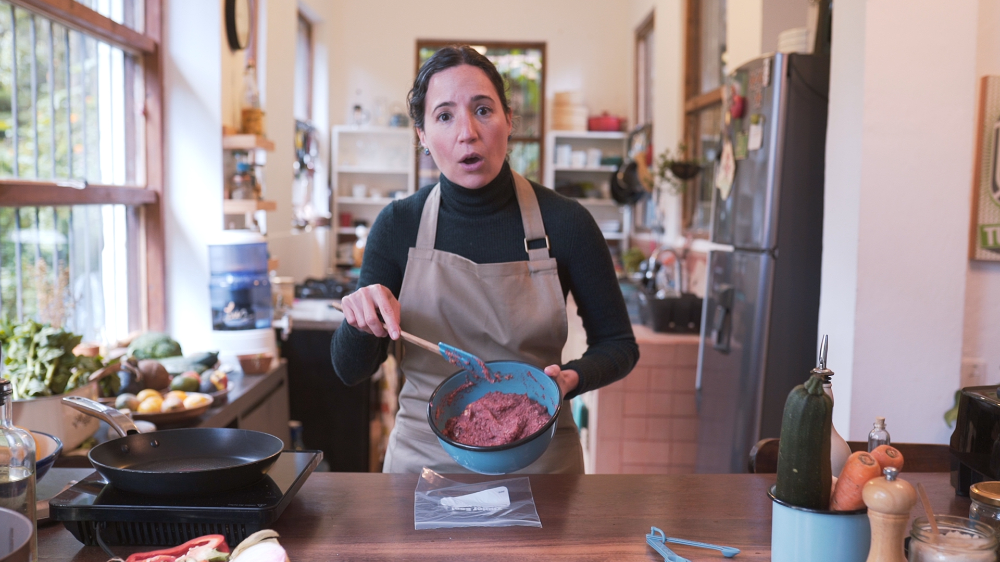
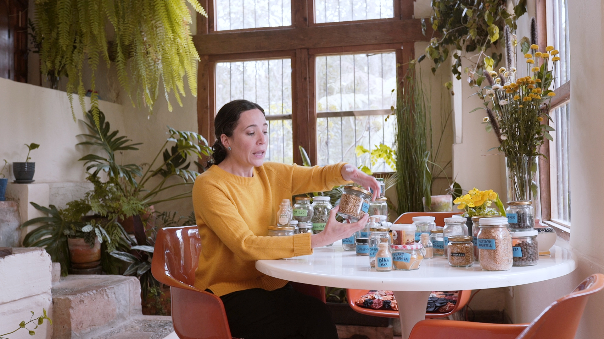
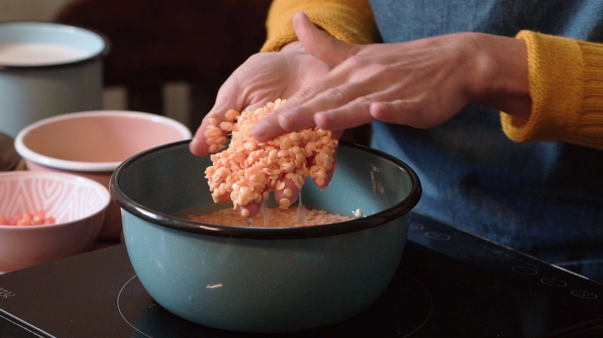
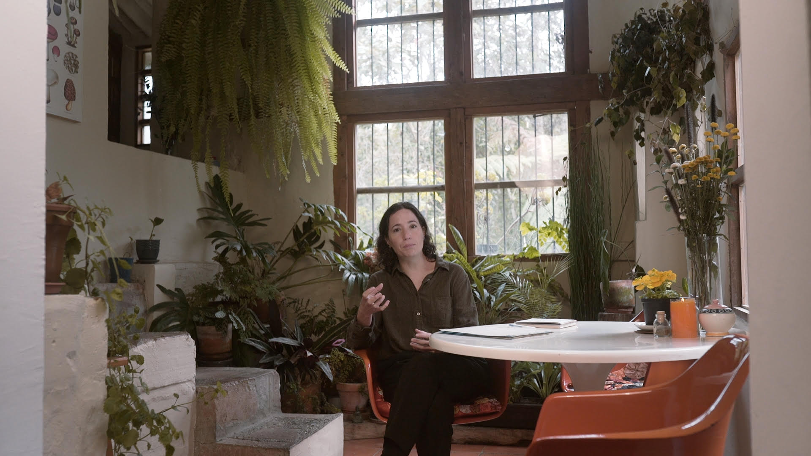
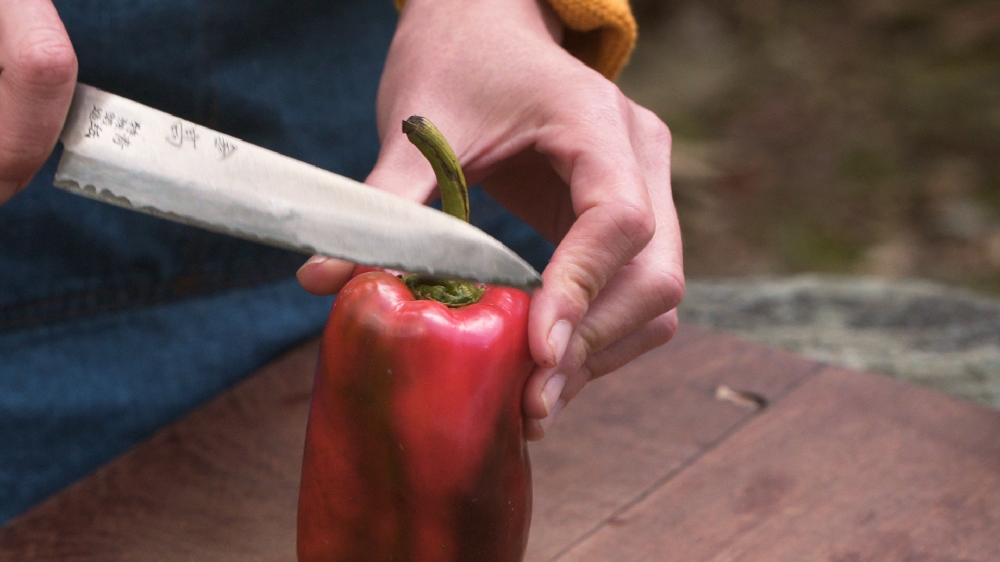
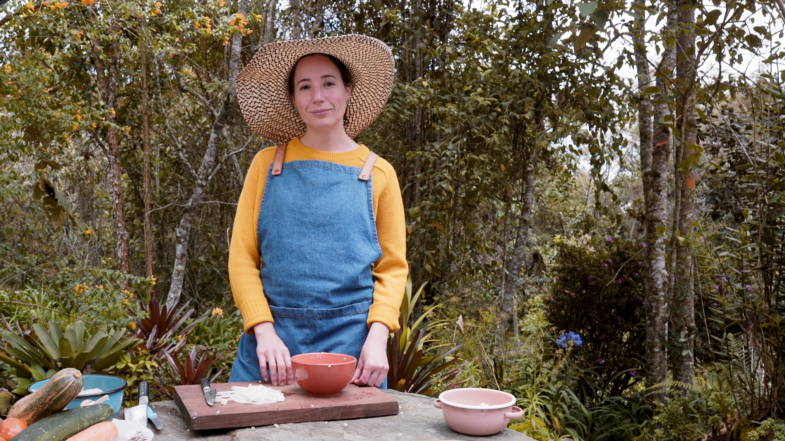

El alimento nos abre la puerta a un universo infinito de creatividad y conexión con la
vida, compartir este vínculo me mantiene plena.
Entiendo la alimentación como una cadena energética que comienza con el cultivo
de los alimentos, la tierra donde crece y el trabajo de quienes lo cuidan, hasta
llegar a las manos que lo preparan y el momento sagrado de su consumo, durante
estas etapas se transforma esa energía para finalmente hacer comunión con el
universo y hacerla parte de nuestro ser. No sólo alimentamos el cuerpo físico, esa
energía nutre también nuestros pensamientos y emociones. He sido testigo, durante
más de 20 años de trabajo profesional en la cocina, de cómo la alimentación es un
gran portal al despertar de la conciencia: al cambiar la forma, cambia también el fondo.



Cocinera colombiana con más de 20 años de experiencia con formación en el SENA y
en IAG en Buenos Aires, Argentina. La comida es el lenguaje a través del cual
comunica su amor. Trabajó como cocinara televisiva para el canal Utilísima
durante 2 años, docente de la Colegiatura Colombiana y fundadora del Restaurante Verdeo
en Medellín. Desde hace más de 10 años ha explorado y estudiado el mundo de la cocina
consciente donde busca que el alimento llegue más allá de los sentidos y nutra también
las emociones, mente y espíritu. Actualmente desarrolla proyectos educativos para
generar confianza con los alimentos y despertar el sentido de unidad a través de ellos.



El alimento nos abre la puerta a un universo infinito de creatividad y conexión con la
vida, compartir este vínculo me mantiene plena.
La comida es el lenguaje a través del cual comunico el amor.